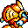

| 概要 | 情報 | アイテム一覧 |
| 敵キャラ一覧 | ボス戦 | ステージ一覧 |
| 攻略チャート | ぽっぷるメイル攻略へ |
| 名 前 | 画 像 | 行 動 | 所 持金 | 出 現場所 |
| タヌキ | 盾を構えられると無敵です。 主人公を見失って、きょろきょろしている時でないとダメージを与えられません。 |
3 | 第1ステージ | |
| みじゅくモノ | 一定間隔で魔法を放ってきます。 それだけです･･･ |
20 | 第1ステージ | |
| クモくん | 天井にくっついて上下しています。 上に乗るとダメージを受け続けるので注意。 |
8 | 第1ステージ | |
| 木人Jr | 主人公が下にいると岩を落としてきます。 別な攻撃といして体当たりがあります。 |
5 | 第1ステージ | |
| 丸太転がし | 非常に邪魔な場所にいて主人公が近寄ると丸太を転がしてきます。 丸太はいかなる攻撃でも破壊できません。 |
30 | 第1ステージ | |
| ツノバチ | 空中を飛び回り、主人公を発見すると突進してきます。 | 10 | 第1ステージ | |
| 名 前 | 画 像 | 行 動 | 所 持金 | 出 現場所 |
| トゲトゲ | 近寄るとパンチをしてきます。 上に乗るとトゲに刺されてダメージを受けてしまいます。 |
40 | 第2ステージ | |
| 沢蟹 | 突然現れて泡をばらまきます。 泣いているように見えるのは気のせいでしょうか。 |
60 | 第2ステージ | |
| ディノフィッシュ | 水中をゆっくりと移動し、主人公を発見すると泡を飛ばしてきます。 | 0 | 第2ステージ | |
| 電撃クラゲ | 主人公が真下を横切ると、雷を落としてきます。 | 0 | 第2ステージ | |
| スケルトンザウルス | 主人公に突進するだけです。 しかし、骨が崩れている時は無敵なので、倒しづらいです。 |
50 | 第2ステージ | |
| 化石 | 主人公が近づくと、火の玉を吐いてきます。 真下にいると何もしてきません。 |
0 | 第2ステージ | |
| ゴルデアス・ミニ |  |
突進してくるだけです。 | 0 | 第2ステージ |
| 名 前 | 画 像 | 行 動 | 所 持金 | 出 現場所 |
| 怒髪天 | 一瞬、行動を止めると妖しい攻撃を放ち突進してきます。 遠距離攻撃は表示されないので、姿を見たら取りあえずジャンプした方がいいでしょう。 |
150 | 第3ステージ | |
| トーテムポール | 主人公を発見すると、石柱を生成し、石つぶてを飛ばしてきます。危険を感 じたら、ヘルメットをかぶるべきです。 また、倒すとまれに金塊を落としていく金持ちなモンスター。石柱を生成し、高い位置にいる時に倒すほど、金塊を落とす確率が高いとか。 このモンスターはただ倒すだけではなく、他の利用法もあります。 |
200 | 第3ステージ | |
| 火炎虫 | ふらふらと移動しており、主人公を追ってくることはしません。 しかし、残像に接触してもダメージを受けるので、早めに倒した方がいいです。 |
220 | 第3ステージ | |
| 名 前 | 画 像 | 行 動 | 所 持金 | 出 現場所 |
| 半魚人 | ぼんやりと移動していて、自分から攻撃をしてくることはありません。 しかし、遠距離攻撃(魔法、ブレス、ダガー、ブーメラン)などは全て無効化されてしまいます。 |
350 | 第4ステージ | |
| キタキツネ | 画面内に表示されていれば、魔法を放ってきます。 8方向へ竜巻を飛ばすのですが、それに触れるとダメージを受けながら強制的に移動させられてしまいます。 |
450 | 第4ステージ | |
| 石台君 | 主人公が近づくと、氷の結晶に似た球を放ってきます。これに触れると、
凍結状態になります。 他の敵がその球に触れても同じように氷漬け・・・ |
0 | 第4ステージ | |
| アイスドラゴン | 主人公が近寄ると首を伸ばして攻撃してきます。非常に邪魔です。 ちなみに首を攻撃してもダメージを与えられません。 |
400 | 第4ステージ | |
| おいはぎ船長 | 主人公の近くで持っている剣をむけてきます。意外と射程が長いので注意
してください。 ごくまれに金塊を落としていきます。 |
300 | 第4ステージ | |
| 名 前 | 画 像 | 行 動 | 所 持金 | 出 現場所 |
| ガンメット |  | ぴょんぴょんとはねながら移動し、主人公の隙を見てミサイルを放ってき ます。顔を見せていない時は無敵なので、取りあえず逃げましょう。 | 500 | 第5ステージ |
| グレムリン | 主人公が近づくと、トゲトゲを落としてきます。しかも、大量に。 奇妙な軌道を描き飛んでいるので、非常に狙いにくい相手ですが、倒しておかないと後で困るので、早めに慣れましょう。 |
400 | 第5ステージ | |
| マッドマン | 顔を出して何もしてこないと思うと、3方向に弾を放ってきます。 動きが遅いので早めに倒してしまいましょう。 |
第5ステージ | ||
| 名 前 | 画 像 | 行 動 | 所 持金 | 出 現場所 |
| 概要 | 情報 | アイテム一覧 |
| 敵キャラ一覧 | ボス戦 | ステージ一覧 |
| 攻略チャート | ぽっぷるメイル攻略へ |
ぽっぷるメイル
| 目次へ戻る | ページの上部へ |